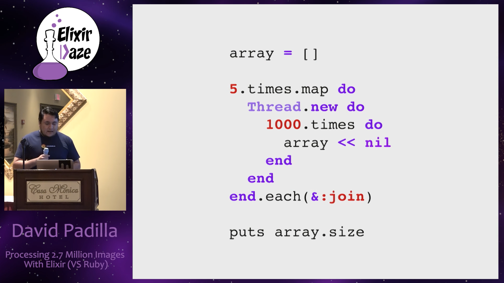
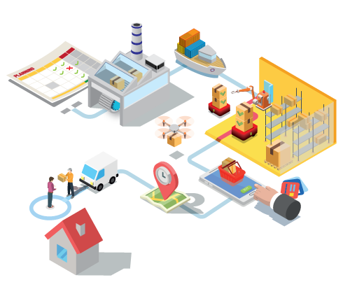
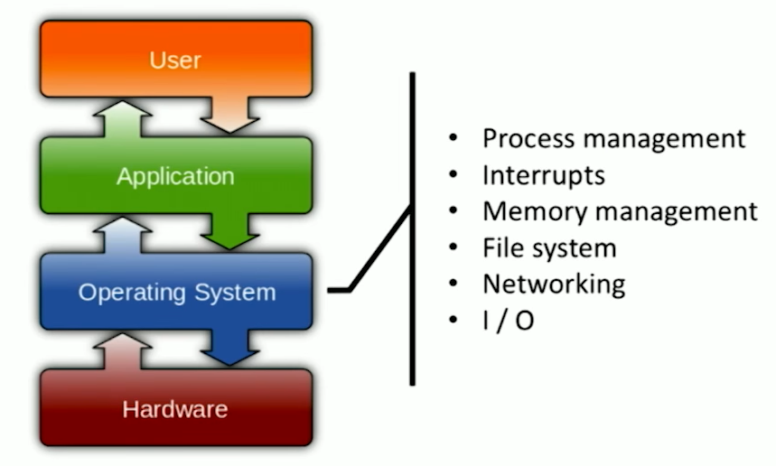
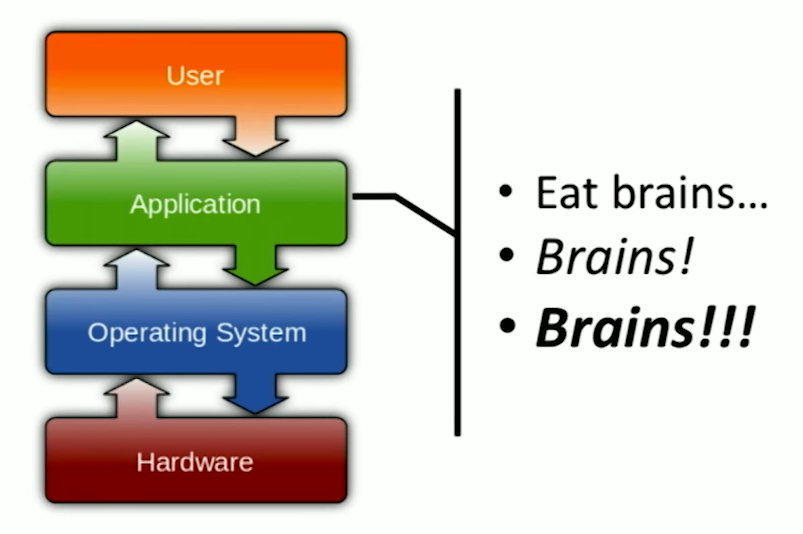
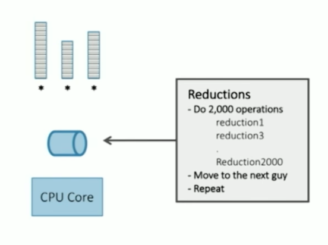
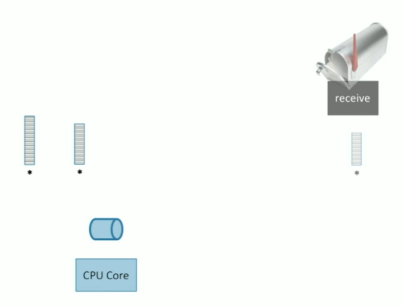
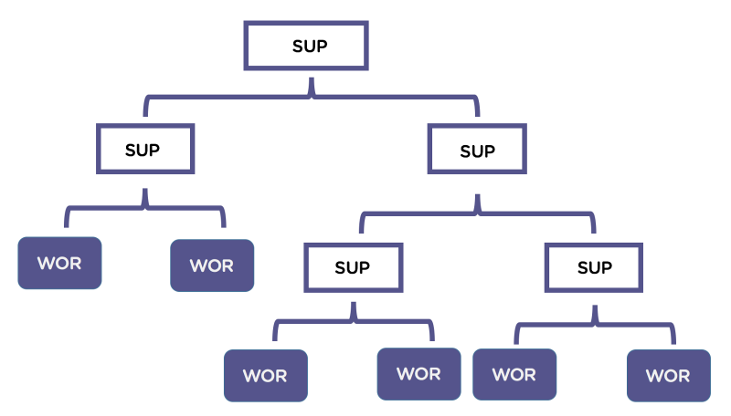
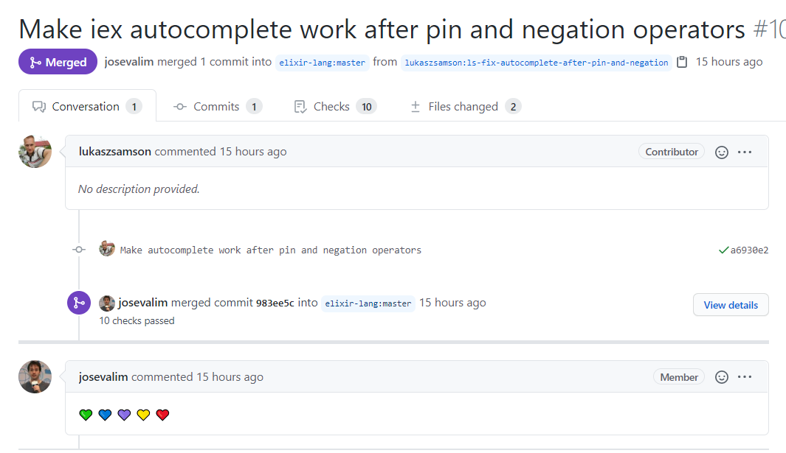

- Alumno de Codeable (2do cohort)
- Coach en MakerLab.
- Software Enginneer en Able.
- Experiencia en ELixir.
- Side-Projects y trabajos freelancer.
Me
Me
¿Por qué fue creado?
¿Por qué fue creado?
Ruby (one hard problem)
Ruby (one hard problem)

Aprovechar arquitectura multinucleo
Aprovechar arquitectura multinucleo

Concurrencia y paralelismo en Ruby
Concurrencia y paralelismo en Ruby

genial, vayamos por jruby (pero existe un problema)
genial, vayamos por jruby (pero existe un problema)

Ejemplo
Ejemplo

Unexpected results
Unexpected results

Pequeño adelanto (use case)
Pequeño adelanto (use case)
Procesar 2.7 millones de imagenes (downdload from aws, resize and upload)
- Ruby v2:
- 31.25 dias.
- Jruby:
- 18 dias
- Hard time en desarrollo
- Elixir:
- 4 dias
- 12 dias para figurar como trabajar con Elixir xD
- WORTH IT!
Hasta que un joven programador aparecio.
Jose Valim (parte de la core team de Ruby on Rails)
Jose Valim (parte de la core team de Ruby on Rails)

se encontro con un libro
se encontro con un libro


Una red telefonica siempre debera operar independientemente del numero simultaneo de llamadas, bugs inesperados, o llevandose actualizaciones de hardware y software.
– Saša Jurić, Elixir in Action
Cualidades necesarias en sistemas modernos.
La idea original de Jose era llevar los conceptos de Erlang a Ruby.
Pero simplemente no podia llevar 40 años de desarrollo a Ruby.
Termino creando un nuevo lenguaje
Proceso de creación (2011)
Proceso de creación (2011)

Ruby -> Elixir (Developer Joy)
Ruby -> Elixir (Developer Joy)

Erlang -> Elixir (40 years of Development)
Erlang -> Elixir (40 years of Development)

Clojure -> Elixir (Metaprogramación)
Clojure -> Elixir (Metaprogramación)

Elixir is what would happen if Erlang, Clojure, and Ruby somehow had a baby and it wasn’t an accident.
–Devin Torres
Some Concepts
Some Concepts
Pattern Matching
Pattern Matching

Pattern Matching =
Pattern Matching =
iex> {nombre, apodo} = {"Albert", "Amiguito"}
iex> nombre
"Albert"
iex> apodo
"Amiguito"
iex> {:ok, mensaje} = {:ok, "Holi Woli"}
{:ok, "Holi Woli"}
iex> mensaje
"Holi Woli"
iex> [a,_,_,_, %{value: a}] = [1, 2, 3, 4, %{value: 1}]
Funciones
Funciones
iex> double = fn (n) -> n*2 end iex> double.(2) 4
defmodule MyMath do def factorial(0), do: 1 def factorial(n), when is_integer(n) and n >=0 do: n * factorial(n - 1) def factorial(_), do: "qué paso amiguito?" end iex> MyMath.factorial(5) 120
Inmutabilidad en Elixir
Inmutabilidad en Elixir
- Ninguna funcion es capaz de modificar sus parametros de entrada.
iex> person = %{nombre: "Albert", favorite_word: "Amiguito"}
iex> change = fn map -> map |> Map.put(:favorite_word, "Holi Woli") end
iex> change.(person)
%{favorite_word: "Holi Woli", nombre: "Albert"}
iex> person
%{favorite_word: "Amiguito", nombre: "Albert"}
Pipe Operator |>
Pipe Operator |>

Pipe Operator |>
Pipe Operator |>
Diseñado inicialmente para resolver este problema (basado en pipeline de unix):
lista = 1..500000 temp = Enum.map(lista, &(&1*2-20)) respuesta = Enum.filter(temp, &(rem(&1, 3) == 0 || rem(&1, 5) == 0)) respuesta = Enum.take(temp, 5) Enum.take(Enum.filter(Enum.map(1..500000, &(&1*2-20)), &(rem(&1, 3) == 0 || rem(&1, 5) == 0)), 5)
Pipe Operator |>
Pipe Operator |>
Podemos usar algo más elegante y eficiente
1..500000 |> Enum.map(&(&1*2-20)) |> Enum.filter(&(rem(&1, 3) == 0 || rem(&1, 5) == 0)) |> Enum.take(5)
Pipe Operator |>
Pipe Operator |>

Macros (Metaprogramación)
Macros (Metaprogramación)
- Demo Time
iex> require MyMacro iex> MyMacro.say(3+4) iex> MyMacro.say(3*4)
With (Special Form)
With (Special Form)
- Demo Time
iex> SpecialForm.with("holi")
iex> SpecialForm.with(%{width: 100})
iex> SpecialForm.with(%{width: 100, height: 200})
BEAM (Virtual Machine)
BEAM (Virtual Machine)
Sistema Operativo
Sistema Operativo

Application
Application

BEAM (Erlang VM) no es un sistema operativo de proposito general.
El objetivo de BEAM es ser un lugar solido donde ejecutar codigo.
Actors (Procesos BEAM)
Actors (Procesos BEAM)
Scheduler(Ejecutar procesos en los CPU Core)
Scheduler(Ejecutar procesos en los CPU Core)

Scheduler(Procesos esperando mensaje, proceso fuera de la cola de ejecucion)
Scheduler(Procesos esperando mensaje, proceso fuera de la cola de ejecucion)

Arbol de supervision
Arbol de supervision

Por qué aprender Elixir?
Por qué aprender Elixir?
Performance y Projects
Performance y Projects
- 2 Millones de WebSocket Conections (2015)
- Font Awesome - 100 and 250 microseconds
- Telemetry (DEMO)
- Livew View
Comunidad
Comunidad

Some Companies using Elixir
Some Companies using Elixir


- 200 servidores python a solo 4 con Elixir.
- 30 instancias c32.xl con Java a solo 15 con Elixir1.


Thank You ʕ•ᴥ•ʔ